PET Engenharia de Computação - Site Oficial
Comissões
 DEV
DEV
A comissão de Dev é responsável por desenvolver e dar manutenção a todos os sistemas web no domínio do PET Engenharia de Computação - UFES. Tais como, o site da Jacee, do Topcom, do Introcomp, do PET Engenharia de Computação entre outros. Alguns desses projetos podem ser achados nos links abaixo. Além disso, os integrantes da comissão trabalham também com o desenvolvimento de aplicações para dispositivos móveis. As ideias de aplicativos surgem conforme a demanda das outras comissões do grupo PET. Os integrantes da comissão visam o aprendizado de tecnologias compatíveis com o mercado atual, como React Native e Flutter.
EletroPET
A comissão EletroPET é responsável por desenvolver projetos que envolvam eletrônica, programação e microcontroladores, como Arduino e Micro:bit. A comissão tem o intuito de colocar em prática o que foi aprendido na teoria. Alguns projetos já foram desenvolvidos e estão visíveis ao público, tais como a tranca biométrica da sala do PET. Os projetos desenvolvidos estão todos documentados no instructables.
Topcom
O Topcom, Torneio de Programação de Computadores, é um evento anual organizado pelo PET EngComp por e alunos voluntários. O evento possui como principal motivação o incentivo à programação competitiva para os alunos da graduação e para os interessados de outras instituições de ensino, tanto do Médio quanto do Superior. O formato utilizado é baseado nos torneios nacionais e internacionais de programação competitiva. Procura-se simular ao máximo o ambiente oferecido por este torneio, utilizando questões, software e padrões de correção, para que os participantes possam experimentar um cenário real de competição e assim estarem familiarizados com as categorias de acesso à maratona nacional. As equipes ganhadoras do Torneio são premiadas com troféus e a inscrição na etapa regional da Maratona SBC de Programação.
Game Jam
O PET Game Jam é uma competição de desenvolvimento de jogos de navegador criada pelo PET Engenharia de Computação da Ufes. Os participantes devem se organizar em equipes de até quatro pessoas e programar um jogo de navegador seguindo uma temática fornecida no início da competição. As equipes têm uma semana para desenvolverem o jogo e após isso, eles serão avaliados e um vencedor é escolhido.
Monitorias
Alguns Petianos com mais facilidade em determinadas matérias fornecem monitorias para os alunos em algumas disciplinas, que atualmente são Estrutura de Dados 1, Programação 1 e Programação 2.
Manutenção
A comissão de manutenção é responsável pela infraestrutura computacional do PET Eng Comp, como o gerenciamento da rede interna e a manutenção das máquinas.Além de dar suporte às outras comissões em suas aplicações. Assim, os petianos envolvidos nessa comissão trabalham com os mais variados assuntos dentro de DevOps.
Pulga
PET divulga, cria todas as artes necessárias para as demais comissões do PET Eng Comp. Publicações em redes sociais, desenho de camisas e imagens para eventos são feitos por essa comissão. Portanto todos dentro do Pulga aprendem a trabalhar com importantes ferramentas de design gráfico.